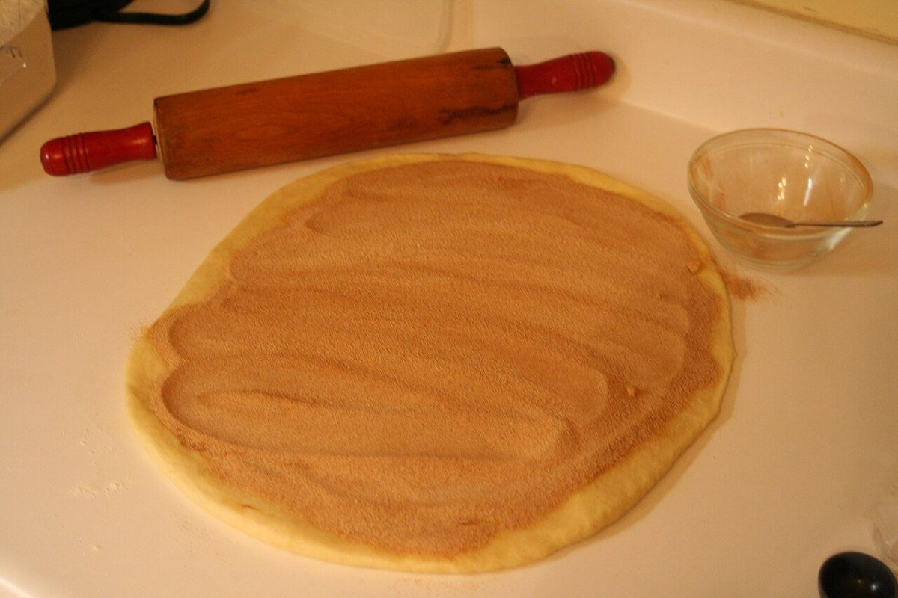

店のこと
店のこと
お店について確認できているのは、所在地とInstagramのアカウントだけです。
このページの「想像してみる」部分は、制作側が想像して書いたものです。お店の実際の様子・考え・商品とは関係ありません。
確認できていること
- 店名は「小さなパン屋 atelier hasamu(アトリエ ハサム)」、業種はパン屋
- 所在地は新潟県糸魚川市田海5238(〒949-0303)
- 電話番号はなし。連絡はInstagramから
- 営業時間・定休日・メニュー・価格・ご予約・駐車場は準備中

想像してみる
「小さなパン屋」という名乗りから
屋号に「小さなパン屋」とあることから、制作側は、こぢんまりとした店でパンを選ぶ時間を想像しました。「atelier」の語感からは、手を動かして作る場のイメージも浮かびます。ただし、どんな店なのか、何を作っているのかは分かりません。実際のお店の姿ではなく、制作側の想像です。

